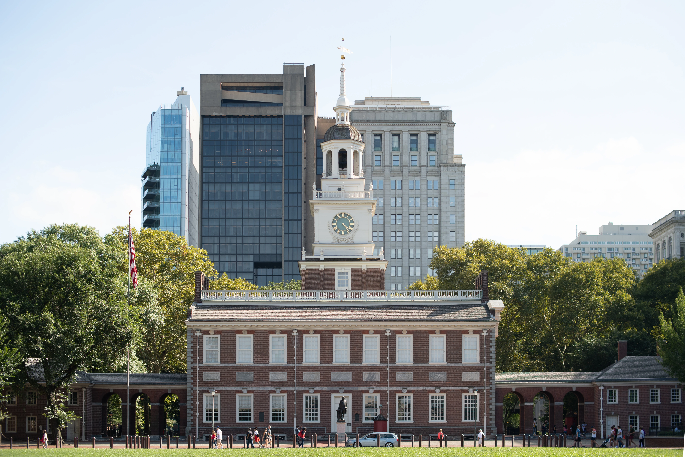

La North Christian Church est une église située à Columbus dans l’Indiana aux États-unis. Abritant le culte de l'Église
chrétienne des Disciples du Christ, l’église est conçue par l'architecte finno-américain Eero Saarinen. Elle est
construite entre 1959 et 1964.
Une architecture hexagonale
Le bâtiment est de forme hexagonale, avec une flèche centrale en métal qui culmine à 59 m1. Sous la flèche, il y a un
oculus qui laisse entrer la lumière au niveau principal. Le sanctuaire est situé au centre du bâtiment, et la table de
communion est située au centre du sanctuaire. Des rangées de bancs entourent l'autel dans un hexagone, reflétant l'idée
que le culte doit être un aspect central de la vie de la congrégation. Le niveau inférieur contient des salles de
classe, un auditorium, une cuisine et un espace d'activités.
Une église remarquée
En 2000, L’église est classée National Historic Landmark
Qu'est ce que le National Historic Lanmark ?

Aux États-Unis, un National Historic Landmark, en français « site historique national », est un lieu officiellement
considéré comme ayant un intérêt historique de portée nationale.